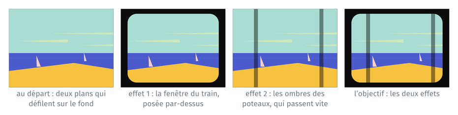
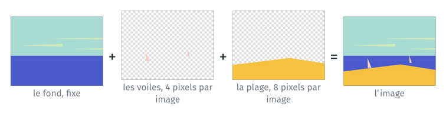
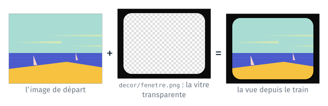
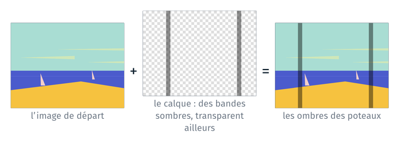

TD 7b — Reprendre et compléter le projet d’un autre#
Note
Les fichiers des TD de la séance sont dans l’archive info01-cours7.zip.
Le TD part d’un projet déjà commencé par quelqu’un d’autre : le dépôt
train, publié sur GitHub par le module. Son programme fabrique une courte
vidéo d’après la scène de la mer du clip « Moon » de Kid Francescoli
(Cauboyz, 2017). Dans ce clip, la caméra filme la mer depuis un train : le
paysage défile derrière la vitre, les plans proches plus vite que les plans
lointains, et les ombres des poteaux le long de la voie passent très vite.
Ce que le TD ajoute au programme#
Le programme du dépôt ne fait défiler que le paysage : deux plans, les voiles et la plage, sur un fond fixe. Le TD lui ajoute les deux autres éléments du clip, deux effets :
effet 1, la fenêtre du train : le cadre de la vitre, posé par-dessus le paysage ;
effet 2, les ombres des poteaux : des bandes sombres qui traversent l’image très vite, calculées avec numpy.

Les deux effets se développent sur deux branches parties du même commit,
fenetre et poteaux, comme le feraient deux personnes en même temps.
Chacune arrive sur master par une pull request. Les deux modifient le
même endroit de la fonction image : la seconde pull request s’arrête sur
un conflit, que l’on résout sur le poste.
Le guide donne les lignes à modifier comme ceux du projet 4. Une ligne
marquée - est à supprimer, une ligne marquée + est à ajouter, sans le
+ ni les cinq espaces qui le suivent. Les lignes sans signe ne changent
pas et indiquent l’endroit. Le nombre qui suit le signe est le numéro de la
ligne dans VS Code, quand les modifications sont faites de haut en bas.
Étape |
Objectif |
Durée |
|---|---|---|
récupérer un projet et son environnement, le faire tourner |
20′ |
|
lire le code d’un autre : comment une image est composée |
10′ |
|
effet 1, la fenêtre du train, sur une branche ; une pull request |
20′ |
|
effet 2, les ombres des poteaux avec numpy, sur une autre branche ; un conflit |
40′ |
|
E4 (bonus) |
un troisième plan, sans modifier le code |
Au début de la séance#
Le compte GitHub du cours 6, avec la clé SSH du cours 6 enregistrée.
L’archive
info01-cours7.zip, copiée depuisformationTempsur le Bureau, puis extraite : clic droit, Extraire tout, en effaçant la fin du dossier proposé,\info01-cours7. Le dossier extrait estDesktop\cours7.
Ouvrir le dossier cours7/7b_train/ dans VS Code, puis un terminal Git Bash
(menu Terminal, New Terminal ; flèche à côté du +, Git Bash).
E0 · Récupérer le projet et son environnement#
À faire : le dépôt
traincloné depuis le compte du module, puis poussé vers un dépôt vide de votre compte ; l’environnementtraincréé depuisenvironment.yml.À obtenir :
python train.py --images 48 --videoécritsortie/train.mp4, où deux plans défilent sur le fond.
E0.1 Le dépôt#
Sur votre compte GitHub, créer un dépôt vide nommé train (New
repository, sans README). Le compte du module est geodata-ing1-info-01.
Puis :
cd travail
git clone git@github.com:geodata-ing1-info-01/td7b-train.git train
cd train
git remote set-url origin git@github.com:<compte>/train.git
git push -u origin master
Le dernier argument de git clone nomme le dossier local train.
git remote set-url change l’adresse du dépôt distant origin : les
push suivants vont à votre dépôt. Régler ensuite votre nom, votre
adresse, et la façon dont git pull réunit deux historiques (par une
fusion, étape E3) :
git config user.name "Prénom Nom"
git config user.email "prenom.nom@exemple.fr"
git config pull.rebase false
Vérification : ls liste README.md, decor, environment.yml et
train.py ; git log --oneline affiche trois commits.
E0.2 L’environnement#
Le programme lance ImageMagick (magick) et ffmpeg, deux programmes en
ligne de commande. Le fichier environment.yml du dépôt décrit
l’environnement du projet :
cat environment.yml
conda env create -f environment.yml
conda activate train
La création télécharge les paquets : plusieurs minutes. Pendant ce temps, lire le README du dépôt.
Vérification : l’invite commence par (train) ; magick -version
affiche la version d’ImageMagick.
E0.3 Faire tourner le programme#
python train.py --help
python train.py --numero 40
écrit : C:\Users\eleve\Desktop\cours7\7b_train\travail\train\sortie\train_0040.png
python train.py --images 48 --video
48 images dans C:\Users\eleve\Desktop\cours7\7b_train\travail\train\sortie\images
écrit : C:\Users\eleve\Desktop\cours7\7b_train\travail\train\sortie\train.mp4
Vérification : start sortie/train.mp4 montre les voiles et la plage
jaune qui défilent vers la gauche, la plage plus vite que les voiles.
E1 · Lire le code#
À faire : lire
decor/plans.csvet la fonctionimage; répondre aux trois questions.À obtenir : les réponses, vérifiées en lançant le programme.

Chaque image de la vidéo superpose des couches : le fond, puis chaque plan,
découpé dans une bande qui tourne. Le damier marque les pixels
transparents : là, la couche laisse voir celle du dessous. Les plans sont décrits dans
decor/plans.csv, du plus lointain au plus proche :
fichier,vitesse
voiles.png,4
plage_jaune.png,8
La fonction image construit la commande de magick, couche par couche :
def image(fichier, plans, numero):
"""L'image numéro `numero` : le fond, puis chaque plan décalé de numero × sa vitesse."""
commande = [MAGICK, str(DECOR / "fond.png")]
for nom, vitesse in plans:
commande = commande + arguments_plan(nom, numero * vitesse) + ["-composite"]
commande = commande + [str(fichier)]
subprocess.run(commande, check=True)
Quelle ligne de
imageajoute un plan à la commande, et combien de fois s’exécute-t-elle pour une image ?De combien de colonnes la bande des voiles est-elle décalée à l’image numéro 10 ?
Que devient l’image si l’on échange les deux dernières lignes de
decor/plans.csv? L’essayer avecpython train.py --numero 40, puis remettre le fichier dans son état :git restore decor/plans.csv.
Les réponses sont à la fin du guide.
E2 · Effet 1, la fenêtre du train#
À faire : créer deux branches,
fenetreetpoteaux, depuismaster; surfenetre, poser l’image de la fenêtre sur chaque image de la vidéo ; un commit ; la pull request, fusionnée sur GitHub.À obtenir :
sortie/train_0040.pngmontre le paysage derrière la vitre, dans le cadre noir ; sur GitHub,mastercontient la fenêtre.

E2.1 Deux branches#
git branch fenetre
git branch poteaux
git branch
git branch <nom> crée une branche sur le commit courant, sans s’y placer.
Les deux branches partent du même commit, comme deux personnes qui
commencent chacune une fonctionnalité à partir de la même version.
E2.2 La fenêtre#
git checkout fenetre
La fenêtre, decor/fenetre.png, est déjà dans le dépôt : une image de
640 × 480 pixels, noire sur le cadre, transparente sur la vitre. Posée en
dernier sur l’image, elle cache les bords du paysage et le laisse voir par
la vitre. Dans la fonction image, une ligne de plus l’ajoute à la commande
de magick, après la boucle des plans, avec -composite, comme chaque
plan.
53 for nom, vitesse in plans:
54 commande = commande + arguments_plan(nom, numero * vitesse) + ["-composite"]
+ commande = commande + [str(DECOR / "fenetre.png"), "-composite"]
56 commande = commande + [str(fichier)]
57 subprocess.run(commande, check=True)
Vérification : python train.py --numero 40, puis ouvrir
sortie/train_0040.png : le paysage derrière la vitre, et le cadre noir
autour.
git commit -am "La fenêtre posée sur chaque image"
git push -u origin fenetre
E2.3 La pull request#
Sur GitHub : Compare & pull request, Create pull request, Merge pull request, Confirm merge.
Vérification : sur la page du dépôt, train.py contient la ligne de la
fenêtre.
E3 · Effet 2, les ombres des poteaux#
À faire : sur la branche
poteaux: calculer avec numpy un calque des ombres, et le poser sur chaque image (E3.1) ; la pull request, qui s’arrête sur un conflit (E3.2) ; résoudre le conflit sur le poste (E3.3).À obtenir : la vidéo montre des bandes sombres qui passent vite sur le paysage, derrière la vitre ; les deux branches sont fusionnées dans
master.

E3.1 Le calque des poteaux#
git checkout poteaux
Vérification : train.py n’a pas la ligne de la fenêtre. La branche
poteaux est restée au commit de départ.
Dans le clip, les ombres des poteaux passent très vite devant la vitre. Le
programme les dessine sur un calque : une image de 640 × 480 pixels,
transparente sauf sur des bandes verticales sombres. Pour chaque image de
la vidéo, la fonction ecrire_poteaux calcule ce calque et l’écrit dans
sortie/poteaux.png, et image le pose sur le paysage, comme un plan. Les
bandes se décalent de 90 pixels d’une image à la suivante : dix fois plus
vite que la plage.
numpy représente une image comme un tableau de nombres. Le calque est un
tableau de 480 lignes, 640 colonnes et 4 valeurs par pixel : rouge, vert,
bleu et opacité, chacune de 0 à 255. np.zeros(…) crée ce tableau rempli
de zéros : un pixel noir et transparent partout.
np.arange(640) est le tableau des numéros de colonnes, de 0 à 639. Les
opérations sur ce tableau se font sur chaque valeur à la fois :
(np.arange(640) + 90 * numero) % 400 < 24 donne, pour chaque colonne,
True si elle tombe dans une bande et False sinon. Ce tableau de
booléens choisit des colonnes : calque[:, colonnes, 3] = 110 règle
l’opacité de ces colonnes, sur toutes les lignes (:), à 110 sur 255.
18 from pathlib import Path
19
+ import numpy as np
+ from PIL import Image
+
23 # Les programmes
24 MAGICK = "magick"
…
29 SORTIE = Path.cwd() / "sortie"
30 IMAGES = SORTIE / "images"
+
+ # Les ombres des poteaux : des bandes sombres qui passent très vite vers la gauche
+ POTEAUX = SORTIE / "poteaux.png" # le calque des poteaux, refait pour chaque image
+ ECART_POTEAUX = 400 # pixels entre deux bandes
+ LARGEUR_POTEAU = 24 # largeur d'une bande, en pixels
+ VITESSE_POTEAUX = 90 # pixels par image
37
38
…
57
58
+ def ecrire_poteaux(fichier, numero):
+ """Le calque des poteaux de l'image `numero`, 640 × 480 pixels : des bandes sombres, transparent ailleurs."""
+ # Un tableau hauteur × largeur × 4 (rouge, vert, bleu, opacité), à zéro : noir et transparent
+ calque = np.zeros((480, 640, 4), dtype=np.uint8)
+ # Pour chaque colonne, vrai si elle tombe dans une bande
+ colonnes = (np.arange(640) + VITESSE_POTEAUX * numero) % ECART_POTEAUX < LARGEUR_POTEAU
+ calque[:, colonnes, 3] = 110 # l'opacité de ces colonnes, sur toute la hauteur
+ Image.fromarray(calque).save(fichier)
+
+
69 def image(fichier, plans, numero):
70 """L'image numéro `numero` : le fond, puis chaque plan décalé de numero × sa vitesse."""
…
72 for nom, vitesse in plans:
73 commande = commande + arguments_plan(nom, numero * vitesse) + ["-composite"]
+ ecrire_poteaux(POTEAUX, numero)
+ commande = commande + [str(POTEAUX), "-composite"]
76 commande = commande + [str(fichier)]
77 subprocess.run(commande, check=True)
Vérification : python train.py --numero 3, puis ouvrir
sortie/train_0003.png : deux bandes sombres sur le paysage. Puis
python train.py --images 48 --video : les bandes passent vite vers la
gauche.
git commit -am "Les ombres des poteaux"
git push -u origin poteaux
E3.2 La pull request, et le conflit#
Sur GitHub, ouvrir la pull request de poteaux. La page affiche « This
branch has conflicts that must be resolved » : master a changé depuis le
départ de la branche, et les deux branches ont modifié le même endroit de
train.py. Le conflit se résout sur le poste, en ramenant master dans la
branche :
git pull origin master
Auto-merging train.py
CONFLICT (content): Merge conflict in train.py
Automatic merge failed; fix conflicts and then commit the result.
Dans train.py, la fonction image contient les deux versions :
<<<<<<< HEAD
ecrire_poteaux(POTEAUX, numero)
commande = commande + [str(POTEAUX), "-composite"]
=======
commande = commande + [str(DECOR / "fenetre.png"), "-composite"]
>>>>>>> 586b3cb3f7a1a4e1391c836ac75e57fc5c3f18b5
Entre <<<<<<< HEAD et ======= : la version de la branche poteaux.
Entre ======= et >>>>>>> : la version de master, avec la fenêtre. La
ligne >>>>>>> se termine par l’identifiant du dernier commit de master,
différent dans chaque dépôt.
E3.3 Résoudre#
L’image finale demande les deux effets : les lignes des deux versions
restent. Les couches se posent de la plus lointaine à la plus proche : le
paysage, les poteaux, qui sont dehors, puis la fenêtre. Remplacer toutes
les lignes, de <<<<<<< HEAD jusqu’à >>>>>>> compris, par :
ecrire_poteaux(POTEAUX, numero)
commande = commande + [str(POTEAUX), "-composite"]
commande = commande + [str(DECOR / "fenetre.png"), "-composite"]
Vérification : python train.py --images 48 --video : la vidéo de la
dernière image de la figure du début du guide. Ici, le cadre de la fenêtre
est noir, et l’autre ordre des deux lignes donne presque la même image : les
ombres, noires, ne se voient pas sur le cadre noir.
git add train.py
git commit --no-edit
git push
Sur GitHub, la pull request n’a plus de conflit : Merge pull request, Confirm merge. Puis, sur le poste :
git checkout master
git pull
git log --oneline --graph
Vérification : le graphe dessine les deux branches, réunies dans
master.
E4 (bonus) · Un troisième plan#
À faire : ajouter la plage orange à
decor/plans.csv, sans modifier le code ; une branche, une pull request.À obtenir : la vidéo montre trois plans, la plage orange devant, deux fois plus rapide que la plage jaune.
decor/plage.png est une troisième bande, déjà dans le dépôt. Le programme
lit ses plans dans decor/plans.csv : un plan de plus est une ligne de
plus.
git checkout -b plage
echo "plage.png,16" >> decor/plans.csv
python train.py --images 48 --video
>> ajoute la ligne à la fin du fichier, sans effacer les autres.
git commit -am "Un troisième plan : la plage orange"
git push -u origin plage
Puis la pull request, fusionnée sur GitHub, et git checkout master,
git pull sur le poste.
Réponses de l’étape E1#
La ligne `commande = commande + arguments_plan(nom, numero * vitesse)
[« -composite »]
, dans la bouclefor: une fois par ligne deplans.csv`, soit deux fois.
De 40 colonnes : le numéro de l’image, 10, fois la vitesse des voiles, 4.
magickpose les couches dans l’ordre de la commande. Les voiles, posées en dernier, passent devant la plage.